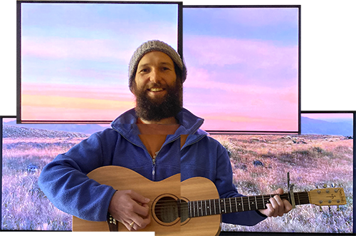

Wear Life Like a Beautiful Dress

Update Required
To play the media you will need to either update your browser to a recent version or update your Flash plugin.
------------------------------------------------
download the mp3s @ 320kbps

thanks lovers
†